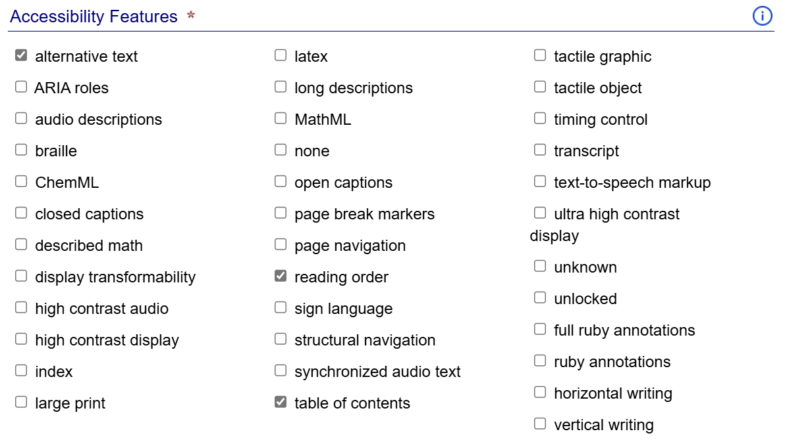
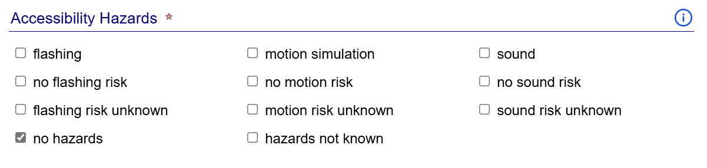
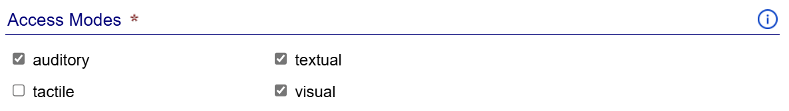
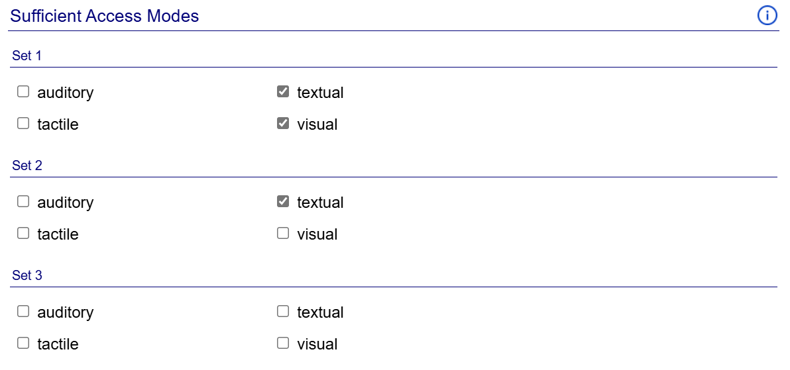
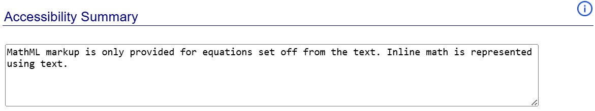

Accessibility Metadata
After completing the accessibility evaluation, the next step is to review the accessibility metadata in the Metadata tab.
Each of the fields in this tab corresponds to a schema.org accessibility metadata property. In some cases, however, the selectable options may include values that only correspond to ONIX accessibility metadata. This is so that the SMART tool can generate both EPUB and ONIX metadata tags from the same set of information. (The SMART tool handles filtering the outputs so these values will not appear where they are not valid.)
Note: It is recommended you include accessibility metadata even if the publication fails conformance testing.
The metadata fields are pre-populated with any information found in the Ace JSON report. This information should always be verified for accuracy, though, especially if metadata may be inferred, as noted in the Ace report loading step. (If accessibility metadata is already present in the publication, the SMART tool will not attempt to infer additional metadata).
The purpose of each discovery field is described in the following list.
Note: More information about these properties and how to set their values is available from the Schema.org Accessibility Properties for Discoverability Vocabulary and the Expressing Accessibility Metadata in the EPUB Package Document guide.
- Accessibility Features
-
This field describes any features or affordances included in the publication that improve its accessibility for readers with different preferred modalities.
Figure 2 — The accessibility features field contains checkboxes corresponding to the features a publication might contain.  - Accessibility Hazard
-
This field identifies any potential hazards in the content, such as a seizure risk from flashing content.
Figure 3 — The accessibility hazard field contains checkboxes for each hazard a publication might contain.  - Access Modes
-
Identifies the perceptual systems or cognitive faculties the reader requires to perceive the content. For example, visual is checked if there are images or video, textual if there is text content, auditory if there is audio, etc.
Figure 4 — The access modes field contains checkboxes for each mode necessary to read the information contained in a publication.  - Sufficient Access Modes
-
Identifies one or more sets of access modes through which a reader can understand the full content of the publication.
Unlike the list of access modes, which only accounts for the default nature of the content, sufficient access modes take into account any features or affordances that allow the original content to be consumed in an alternative form. A publication with text and images, for example, may have a purely textual sufficient access mode if text equivalents and descriptions are provided for all visual content.
Figure 5 — The sufficient access modes field contains sets of checkboxes. Each set allows you to specify a combination of one or more access modes that allow the information to be fully consumed. Authors can always include at least one sufficient access mode set that matches all the listed access modes.
- Accessibility Summary
-
Use this field to provide a information about the accessibility of the publication that cannot be programmatically determined from the other metdata.
Figure 6 — The accessibility summary field contains a text box that allows the free-form entry of a summary. 
Note: For information about generating metadata tags from these fields, refer to the Generating Outputs page.